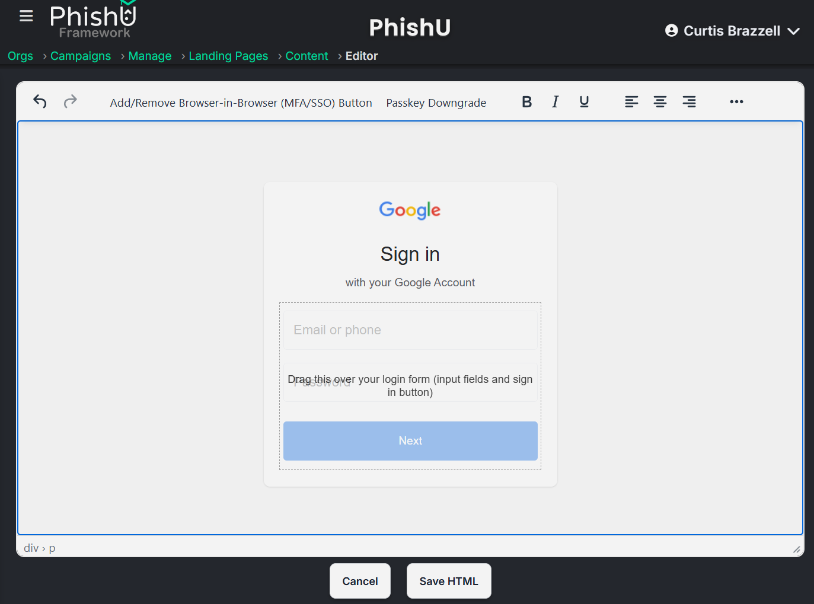
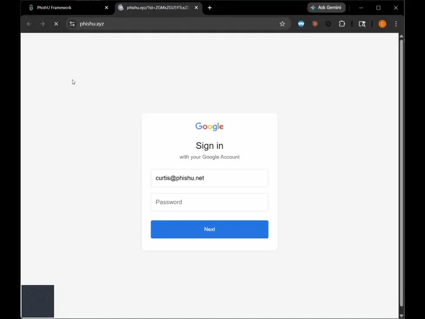

Passkeys are not just another, more secure form of MFA. They are phishing-resistant by design, which means they do not lead to session hijacking the way passwords plus MFA still can. In a classic Adversary-in-the-Middle flow, the victim signs in, completes MFA, and the attacker steals the authenticated session that comes out the other side. Passkeys change that because the authentication response is cryptographically tied to the legitimate site origin. If the phishing page is on the wrong domain, the ceremony does not complete as if it were the real site. That is the whole point.
That is why passkeys matter so much. They do not just make phishing harder. They shut down an entire class of phishing paths that still work perfectly well against passwords, TOTP apps, SMS codes, and push approvals. If an organization has truly moved to passkey-first or passkey-only authentication with no weak fallback route, a transparent MiTM proxy should not be able to turn that login into a stolen reusable session in the same way.
That is also why the remaining risk moves elsewhere. The real question becomes whether the target can be nudged away from the phishing-resistant path and into a weaker fallback flow. The PhishU Framework now supports that reality directly. Operators can add a Passkey Bypass overlay to a landing page from inside the editor, turning what used to be a one-off custom trick into a controlled workflow that fits alongside the rest of campaign delivery, reporting, and training.
When that overlay renders and shows the fallback login form, it also pre-populates the target's email address or username. That small detail matters. It makes the experience feel less like a generic interruption and more like a real continuation of the sign-in flow the target expected, which increases the believability of the downgrade path being tested.

Why Passkeys Are Different
A lot of security conversations still flatten every authentication improvement into the same mental bucket. Passwords plus MFA. Stronger MFA. Better MFA. Passkeys do not fit neatly into that model because they are not just a second factor layered on top of a password prompt. They are a different model for proving identity to a legitimate site.
That distinction matters because it changes what an authorized phishing assessment should test. If the environment really is passkey-first, the strongest possible result is that the classic phish fails. That is not a disappointing assessment outcome. That is evidence that the defense is doing what it is supposed to do.
It also changes how defenders should explain passkeys internally. The sales pitch should not be that passkeys are a more convenient MFA prompt. The better pitch is that passkeys directly resist origin-swapped phishing. They take away the attacker advantage that comes from replaying credentials or stealing the resulting session after the user finishes a legitimate-looking login flow.
Why the Risk Does Not Fully Disappear
Passkeys are excellent. They are not magic. The real weakness usually appears when an environment still offers a weaker recovery or fallback path. If the sign-in experience lets the user abandon the passkey flow and drop back to a password, or if the application presents a confusing alternate login route, the assessment target is no longer the passkey itself. The assessment target becomes the decision architecture around it.
That is where realistic testing still matters. Many organizations are mid-transition. They support passkeys while also leaving password fallback, recovery options, or weaker legacy flows available. In those environments, the question is not whether WebAuthn can be cryptographically broken by the phish. The question is whether the user can be socially engineered into choosing a weaker path that puts the old risk back on the table.
That is also where the educational opportunity gets much better. A phishing program should not accidentally teach people that passkeys are "just another MFA prompt." It should teach the opposite: passkeys are worth adopting precisely because they stop whole classes of phishing that older MFA methods still lose to.
What the Passkey Bypass Overlay Is Actually Testing
Inside the Framework, the Passkey Bypass overlay is not claiming to defeat passkeys cryptographically. The point is to simulate the human and workflow conditions that lead a target away from the stronger path and into a weaker one. In other words, the test is not "can we break passkeys?" The test is "can we socially engineer the user into abandoning the phishing-resistant path?" Pre-populating the target's identifier in the rendered fallback form is part of that realism. It mirrors what users are accustomed to seeing in legitimate sign-in flows and helps measure whether familiarity lowers skepticism in the moment.
That is a more honest and more useful assessment story. If the organization really is passkey-only with no practical fallback, the result should be reassuring. If the user can be steered into a weaker flow, that is still a real risk worth showing, documenting, and training on.

Why This Is Good News for Defenders
There is a tempting marketing instinct to treat every new authentication defense as "good, but attackers can still get around it." That is not the right message here. The right message is that passkeys are a real step forward. They meaningfully reduce phishing risk. They deserve to be adopted aggressively.
What defenders need is not fear-based messaging. They need clarity about where the residual risk moved. With passkeys, the residual risk is much more about weak fallback choices, inconsistent implementation, and user confusion during the transition from older authentication patterns. That is a much narrower and much healthier problem than every login still being vulnerable to the same proxy-and-replay story.
That also makes passkeys a strong training topic. Users should understand that a passkey is not just a cleaner push approval. It is tied to the legitimate site. If they are being prompted in a strange context, redirected into an alternate path, or told the passkey flow is unavailable, that is exactly the kind of moment they should pause and question.
Where This Fits Beside AiTM and Session Hijacking
This is one of the clearest examples of why modern phishing assessment cannot be reduced to a single technique. Transparent AiTM with session hijacking still matters enormously in password-and-MFA environments. AiTM proxying in the PhishU Framework shows exactly how dangerous session theft remains when the authentication flow can be relayed successfully.
Passkeys are different. If the environment is truly passkey-first with no practical downgrade path, that classic session-hijacking story gets much weaker or disappears entirely. That is not a limitation of the Framework. It is evidence that the defense is working. The Framework's job then becomes showing whether the deployment is actually that strong, or whether the user can still be pushed sideways into a weaker route.
That is also why this capability belongs in the same product as landing pages, proxying, token-abuse workflows, campaign delivery, reporting, and training. Different organizations are at different stages of the authentication transition. Some need AiTM testing today. Some need OAuth and device code abuse testing. Some need passkey downgrade testing. Many need all three.
The Better Security Story
The bigger point is not just that PhishU can simulate a passkey bypass scenario. The bigger point is that passkeys deserve to be explained correctly. They are not another checkbox MFA option. They are one of the most important phishing-resistant authentication improvements organizations can adopt.
That makes the assessment story better, not worse. If your environment resists the classic phish, that is worth proving. If your environment still leaves a weaker fallback path open, that is worth proving too. Either way, the result is more useful than another generic click-rate dashboard.
If the short version is needed, it is this: passkeys are great, they really do stop major phishing and session-hijacking paths, and defenders still need to test whether the surrounding login experience quietly reintroduces the old risk through fallback abuse.
Want to test passkey downgrade and fallback risk in your environment?
The PhishU Framework lets operators simulate passkey bypass scenarios, show where phishing-resistant authentication really holds, and connect the result directly into reporting and campaign-linked training.
Contact Us